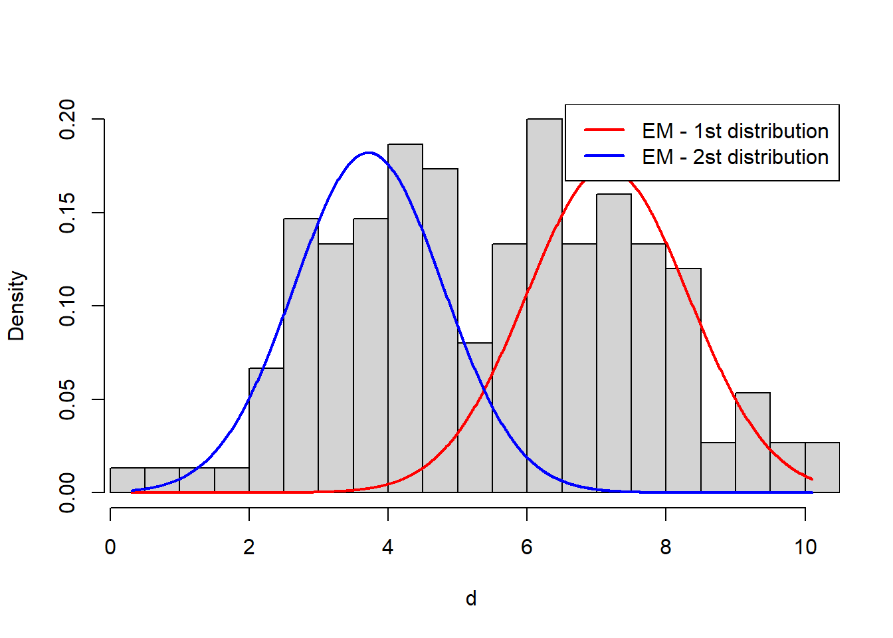

set.seed(1234)
n1 <- 100
mu1 <- 5
sigma1 <- 2
n2 <- 50
mu2 <- 7
sigma2 <- 1.5
d1 <- rnorm(n1, mu1, sigma1)
d2 <- rnorm(n2, mu2, sigma2)
d <- c(d1, d2) # combine dataUnder the hood: Expectation Maximization (EM)
How to estimate parameters if our data contains missing values or variables?
Introduction
If data contains missing values or latent (unobserved) variables, we cannot use the MLE for estimating parameters since the likelihood will be based on both observed and unobserved data. Expectation-maximization (EM) algorithm was developed by Dempster, Laird and Rubin for to find a maximum likelihood estimate of parameters in presence of missing or unobserved data \(^2\).
Assume that the complete dataset consists of \(\mathcal{Z}=(\mathcal{X},\mathcal{Y})\) but that only \(\mathcal{X}\) is observed. Denote the (complete-data) log-likelihood as \(l(\theta;\mathcal{X},\mathcal{Y})\) where \(\theta\) is the unknown parameter vector which we want to estimate. Then, algorithm iteratively applies these two steps:
Expectation step (E-step): Calculate the expected value of complete-data log-likelihood function \(l(\theta;\mathcal{X},\mathcal{Y})\) given the observed data and the current parameter estimate \(\theta_{\text{old}}\):
\[ \begin{align*} Q(\theta;\theta_\text{old}) &:= \mathbb{E}[l(\theta;\mathcal{X},\mathcal{Y})|\mathcal{X},\theta_\text{old}]\\ &= \int l(\theta;\mathcal{X},y)p(y|\mathcal{X},\theta_{\text{old}})dy \end{align*} \]
where \(p(\cdot|\mathcal{X},\theta_{\text{old}})\) is the conditional density of \(\mathcal{Y}\) given observed data \(\mathcal{X}\), and assuming \(\theta=\theta_\text{old}\).
Maximization step (M-step): Maximize the expectation over \(\theta\):
\[ \theta_\text{new}:=\max_\theta Q(\theta;\theta_{\text{old}}) \]
and set \(\theta_\text{old}=\theta_\text{new}\). Repeat these two steps until the sequence of \(\theta_\text{new}\)’s converge \(^1\).
One can ask “How can we choose the initial values?”: for finite mixture distributions, we can estimate initial values for each distribution by K-means.
Example - Finite Mixture Gaussians
Let’s generate the data:
Let’s look our generated data:
hist(d)We need to estimate initial values for EM algorithm. I’ll use K-means estimates for initial values:
clusters <- kmeans(d,2)$cluster
mu1i <- mean(d[clusters==1])
mu2i <- mean(d[clusters==2])
sigma1i <- sd(d[clusters==1])
sigma2i <- sd(d[clusters==2])
pi1i <- sum(clusters==1)/length(clusters)
pi2i <- sum(clusters==2)/length(clusters)Apply algorithm:
# Source: https://rpubs.com/H_Zhu/246450
Q <- 0
Q[2] <- sum(log(pi1i)+log(dnorm(d, mu1i, sigma1i))) + sum(log(pi2i)+log(dnorm(d, mu2i, sigma2i)))
k <- 2
while (abs(Q[k]-Q[k-1])>=1e-6) {
# E step
comp1 <- pi1i * dnorm(d, mu1i, sigma1i)
comp2 <- pi2i * dnorm(d, mu2i, sigma2i)
comp.sum <- comp1 + comp2
p1 <- comp1/comp.sum
p2 <- comp2/comp.sum
# M step
pi1i <- sum(p1) / length(d)
pi2i <- sum(p2) / length(d)
mu1i <- sum(p1 * d) / sum(p1)
mu2i <- sum(p2 * d) / sum(p2)
sigma1 <- sqrt(sum(p1 * (d-mu1i)^2) / sum(p1))
sigma2 <- sqrt(sum(p2 * (d-mu2i)^2) / sum(p2))
p1 <- pi1i
p2 <- pi2i
k <- k + 1
Q[k] <- sum(log(comp.sum))
}Let’s plot the resulting distributions over data:
hist(d, prob=T, breaks=32, xlim=c(range(d)[1], range(d)[2]), main='')
x1 <- seq(from=range(d)[1], to=range(d)[2], length.out=1000)
y1 <- pi1i * dnorm(x1, mean=mu1i, sd=sigma1i) # first dist.
y2 <- pi2i * dnorm(x1, mean=mu2i, sd=sigma2i) # second dist.
lines(x1, y1, col="red", lwd=2)
lines(x1, y2, col="blue", lwd=2)
legend('topright', col=c("red", 'blue'), lwd=2, legend=c("EM - 1st distribution", "EM - 2st distribution"))
Full source code: https://github.com/mrtkp9993/MyDsProjects/tree/main/EM
References
\(^1\) http://www.columbia.edu/~mh2078/MachineLearningORFE/EM_Algorithm.pdf
No matching items
Citation
BibTeX citation:
@online{koptur2022,
author = {Murat Koptur},
title = {Under the Hood: {Expectation} {Maximization} {(EM)}},
date = {2022-10-10},
url = {https://www.muratkoptur.com/MyDsProjects/Analysis.html},
langid = {en}
}
For attribution, please cite this work as:
Murat Koptur. 2022. “Under the Hood: Expectation Maximization
(EM).” October 10, 2022. https://www.muratkoptur.com/MyDsProjects/Analysis.html.